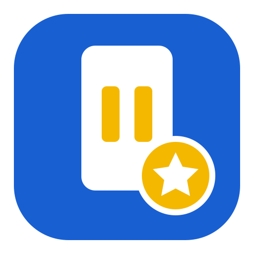

QR 연결 완료!
이 주소는 앞으로도 그대로 사용합니다.
앱을 수정해도 QR은 바꾸지 않아도 됩니다.
📷QR 찍기
📲앱 열기
⭐미션 참여
현재 QR과 설치 주소는 정상 연결되어 있습니다.
다음 단계에서 이름 적립·관리자 데이터 연동을 이 주소에 붙이면 됩니다.
다음 단계에서 이름 적립·관리자 데이터 연동을 이 주소에 붙이면 됩니다.

이 주소는 앞으로도 그대로 사용합니다.
앱을 수정해도 QR은 바꾸지 않아도 됩니다.
1. Safari의 공유 버튼을 누릅니다.
2. ‘홈 화면에 추가’를 선택합니다.
3. ‘추가’를 누릅니다.